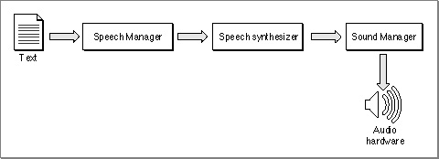
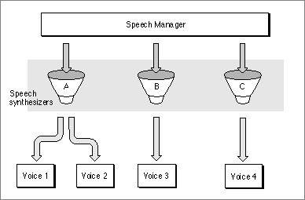

Speech Generation
The Speech Manager converts text into sound data, which it passes to the Sound Manager to play through the current sound output device. The Speech Manager's interaction with the Sound Manager is transparent to your application, so you don't need to be familiar with the Sound Manager to take advantage of the Speech Manager's capabilities. This section provides an overview of the Speech Manager and outlines the process that the Speech Manager uses to convert text into speech.Figure 1-13 illustrates the speech generation process. Your application can initiate speech generation by passing a string or a buffer of text to the Speech Manager. The Speech Manager is responsible for sending the text to a speech synthesizer, a component that contains executable code that manages all communication between the Speech Manager and the Sound Manager. A synthesizer is usually contained in a resource in a file within the System Folder. The synthesizer uses built-in dictionaries and pronunciation rules to help determine how to pronounce text. Your application can use the default system voice to generate speech; it can also specify that some other available voice be used for speech generation.
As Figure 1-13 suggests, the Speech Manager is a dispatching mechanism that allows your application to take advantage of the capabilities of whatever speech synthesizers, voices, and hardware are installed. The Speech Manager itself does not do any of the work of converting text into speech; it just provides a convenient programming interface that manages access to speech synthesizers and, indirectly, to the sound hardware. The Speech Manager uses the Component Manager to access whatever speech synthesizers are available and allows applications to take maximum advantage of a computer's speech facilities without knowing what those facilities are.
Figure 1-13 The speech generation process

A speech synthesizer can include one or more voices, as illustrated in Figure 1-14. Just as different people's voices have different tonal qualities, so too can different voices in a synthesizer. A synthesized voice might sound male or female, and might sound like an adult or child. Some voices sound distinctively synthetic, while others sound more like real people. As speech synthesizing technology develops, the voices that your application can access are likely to sound more and more human. Because the Speech Manager's routines work on all voices and synthesizers, you will not need to rewrite your application to take advantage of improvements in speech technology.
- Note
- The Component Manager is described in Inside Macintosh: More Macintosh Toolbox, but you do not need to be familiar with it to use the Speech Manager.
Figure 1-14 The Speech Manager and multiple voices

Any given person has only one voice, but can alter the characteristics of his or her speech in a number of different ways. For example, a person can speak slowly or quickly, and with a low or a high pitch. Similarly, the Speech Manager provides routines that allow you to modify these and other speech attributes, regardless of which voice is in use.
To indicate to the Speech Manager which voice or attributes you would like it to use in generating speech, your application must use a speech channel. A speech channel is a data structure that the Speech Manager uses when processing text; it can be associated with a particular voice and particular speech attributes. Because multiple speech channels can coexist, your application can create several different vocal environments (to simulate a conversation, for example). Because a synthesizer can be associated with only one language and region, your application would need to create a separate speech channel to process each language in bilingual or multilingual text. (Currently, however, only English-producing synthesizers are available.)
Different speech channels can even generate speech simultaneously, subject to processor capabilities and Sound Manager limitations. This capability should be used with restraint, however, because it can be hard for the user to understand any speech when more than one channel is generating speech at a time. Also, your application should in general generate speech only at the specific request of the user and should allow the user to turn off speech output. At the very least, your application should include an option that allows the user to view text instead of hearing it. Some users might have trouble understanding speech generated by the Speech Manager, and others might be hearing-impaired. Even users who are able to clearly understand computer-synthesized speech might prefer to read rather than hear.
In general, your application does not need to know which speech synthesizer it is using. You can obtain a list of all available voices, but in most cases, you do not need to be concerned with which speech synthesizer a voice is associated. Sometimes, however, a speech synthesizer may provide special capabilities beyond that provided by the Speech Manager. For example, a speech synthesizer might allow you to select an option to read numbers in a nonstandard way. The Speech Manager allows you to determine which synthesizer is associated with a voice for these circumstances, and provides hooks that allow your application to take advantage of synthesizer-specific capabilities.
In general, however, your application can achieve the best results by making no assumptions about which synthesizers might be available. The user of a 2 MB Macintosh Classic® might use a synthesizer with low RAM requirements, while the user of a 20 MB Macintosh Quadra 950 might take advantage of a synthesizer that provides better audio quality at the expense of memory usage. The Speech Manager makes it easy to accommodate both kinds of users.
The most basic use of the Speech Manager is to convert a text string into speech. The
SpeakStringfunction, described in "Generating Speech From a String" beginning on page 1-32, lets you do this even without allocating a speech channel. The chapter "Speech Manager" in this book describes how you can customize the quality of speech output to make it easier to understand and how you can obtain more control over speech by allocating speech channels and embedding commands within text strings.